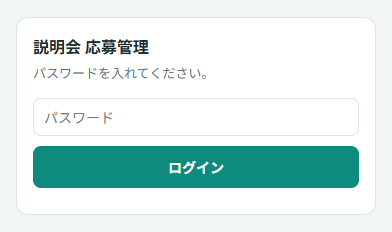
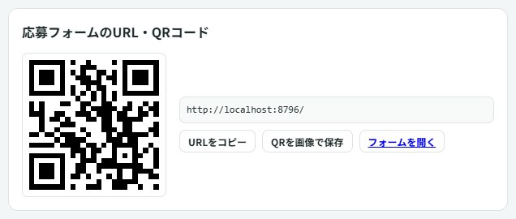
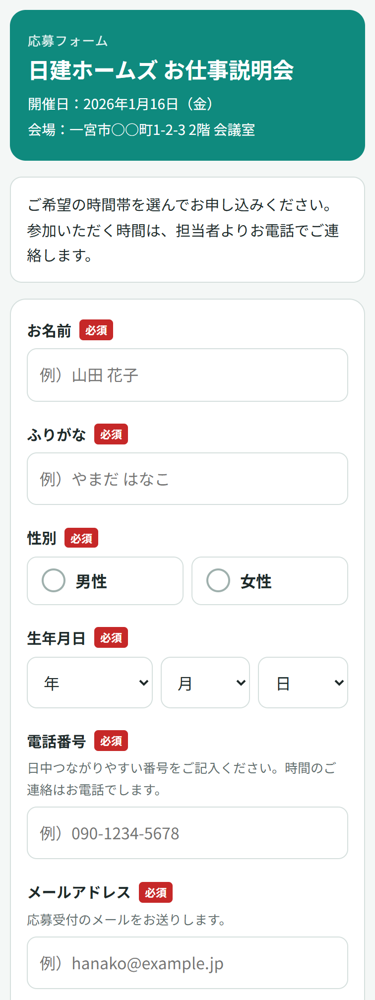
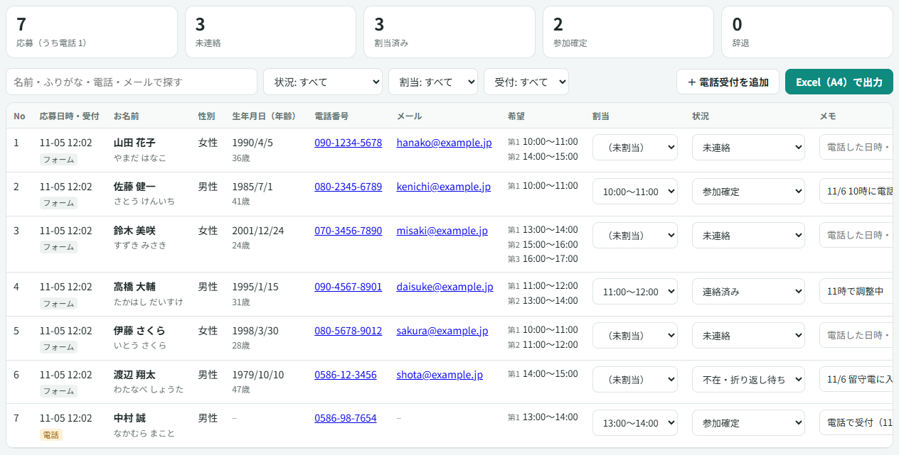
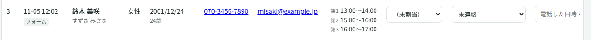
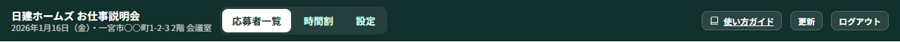
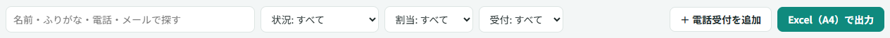

1はじめに
動きで見る：管理画面にログインする

この順に押します
お仕事説明会の応募を、スマホのフォームと電話の両方で受けて、1つの一覧で管理するためのサイトです。
- QRコードを配る
- スマホで応募
- 受付メールが届く
- 電話で時間を決める
- 時間割に割り当て
- Excel で印刷
| 応募フォーム | 応募者がスマホで入力する画面。QRコードから開きます。 |
|---|---|
| 管理画面 | 応募者一覧・時間割・設定。パスワードでログインします（社内・クライアント共通の1つ）。 |
管理画面のいちばん上のバーで、応募者一覧 時間割 設定 を切り替えます。右上の 使い方ガイド でこのページが開きます。
2最初の設定
動きで見る：説明会の情報と受付担当を入れる

この順に押します
説明会ごとに、最初に1回だけ入れます。あとから何度でも直せます。
| 説明会の名前・開催日・会場 | 応募フォームのいちばん上と、本人へのメールに出ます。 |
|---|---|
| 応募を受け付ける | チェックを外すと、フォームに「受付は終了しました」と出て応募できなくなります。 |
| 時間帯・定員 | 時間帯は 10:00〜17:00 の1時間ずつ（7つ）。定員を入れると時間割に「○人 ／ 定員○」と出て、超えると赤くなります。 |
| 受付担当のアドレス | 応募があると、ここに入れた全員にメールが届きます（1行に1つ・何人でも）。 |
| 本人へのメール | 件名・本文・署名を変えられます。{氏名} などの差し込みは、その人の内容になります。 |
3QRコードを用意する
動きで見る：QRコードを保存する

この順に押します
「設定」の右下に、応募フォームのURLとQRコードがあります。チラシや求人広告に入れて使います。
4応募者の入力の流れ
動きで見る：応募者がスマホで入力する流れ

この順に押します
応募者はQRコードを読み込んで、スマホで入力します。すべての項目が必須で、希望の時間帯は1〜3つ選べます。入力 → 確認 → 送信 の3画面です。
送信すると、本人に受付メール、受付担当に「新しい応募」のメールが届きます。参加の時間は、担当者が電話で決めて伝えます（メールでは送りません）。
5応募者一覧
動きで見る：応募者一覧で、電話の結果を残す

この順に押します
動きで見る：探す・絞り込む

この順に押します
応募は届いた順に並びます。割当・状況・メモはその場で保存されます（保存ボタンはありません）。
| 状況 | 未連絡 ／ 連絡済み ／ 不在・折り返し待ち ／ 参加確定 ／ 辞退 ／ その他 |
|---|---|
| 割当 | 電話で決まった時間帯。時間割にも出ます。 |
| 受付 | 「フォーム」＝スマホから応募 ／「電話」＝管理画面で入れた人 |
6電話受付・直す・削除
動きで見る：電話で受けた応募を入れる

この順に押します
動きで見る：名前や電話番号を直す・削除する

この順に押します
電話で応募を受けたときは、管理画面から入れます。必須はお名前・ふりがな・電話番号の3つだけで、ほかは聞けた分だけで大丈夫です。状況は最初から「連絡済み」になります。
7時間割で振り分ける
動きで見る：時間割で振り分ける

この順に押します
1時間ごとに、割り当て済みの人と、まだ割り当てていない人の希望（候補）が並びます。辞退の人は出ません。
電話で時間が決まったら、時間割の「＋」か、一覧の「割当」で割り当てて、状況を「参加確定」にします。
名前のあとに電話番号が出ます（スマホでは押すとそのまま電話できます）。
当日用に PDF で印刷する
時間割の右上の PDF（A4横）で出力 を押すと、A4横の PDF が保存されます。時間帯ごとに、割り当て済みの人（名前・電話・状況）と候補が並びます。人が多くて入りきらないときは、次のページに続きます（ページ番号つき）。
8Excel（A4）で出力して印刷する
動きで見る：Excel（A4）で出力して印刷する

この順に押します
A4横・1ページの幅に収まる形で出力します。見出しは毎ページに付きます。1つのファイルに2枚のシートが入ります。
| 応募者一覧 | No・応募日時と受付・お名前（ふりがな）・性別・生年月日（年齢）・電話・メール・希望・割当・状況・メモ。画面で絞り込んだ人だけが、画面と同じ順で出ます。 |
|---|---|
| 時間割 | 時間帯ごとの人数・割り当て済みの人（名前・電話・状況）・候補。 |
保存したファイルを Excel で開いて、そのまま印刷してください。
9困ったとき
- 応募したのに、本人に受付メールが届かない
- 迷惑メールのフォルダを見てもらってください。メールアドレスの打ち間違いのときは、一覧のメール欄に「送信失敗」と出ます。正しいアドレスを電話で聞いて「編集」で直してください。
- 受付担当にメールが届かない
- 「設定」→「受付担当のアドレス」が入っているか確かめてください。
- ログインできない
- パスワードは担当者に確かめてください。10回間違えると10分間ログインできません。少し待ってからもう一度どうぞ。
- 「ログインの期限が切れました」と出た
- 6時間たつと切れます。もう一度ログインしてください。
- 募集を締め切りたい
- 「設定」の「応募を受け付ける」のチェックを外して保存します。電話受付の追加はそのままできます。
- テストで入れた応募を消したい
- 一覧の「削除」で消せます（元に戻せません）。
- パスワードを変えたい
- 画面からは変えられません。システムの担当者に連絡してください。